소음진동기사(구) (2020-09-26 기출문제)
1과목: 소음진동개론
1. 진동의 영향에 관한 설명으로 옳은 것은?
- 4~14Hz에서 복통을 느끼고, 9~20Hz에서는 대소변을 보고 싶게 한다.
- 수직 및 수평진동이 동시에 가해지면 10배 정도의 자각현상이 나타난다.
- 6Hz에서 머리는 가장 큰 진동을 느낀다.
- 20~30Hz 부근에서 심한 공진현상을 보여 가해진 진동보다 크게 느끼고, 진동수 증가에 따라 감쇠는 급격히 감소한다.
(정답률: 60%)

2. 다음 중 구조 감쇠에 관한 설명으로 가장 적합한 것은?
- 구조물이 조화 외력에 의해 변형할 때 외력에 의한 일이 열 또는 음향에너지로 소산하는 현상
- 윤활이 되지 않는 두면 사이의 상대 운동에 의해 에너지가 소산하는 현상
- 구조물이 운동할 때 유체의 점성에 의해 에너지가 소산하는 현상
- 구조물의 임피던스 부정합에 의해 빛에너지가 소산하여 가진되는 현상
(정답률: 59%)
3. 소음의 영향에 관한 다음 설명 중 거리가 먼 것은?
- 소음의 신체적 영향으로는 혈당도 상승, 백혈구 수 증가, 혈중 아드레날린 증가 등이 있다.
- 4분법 청력손실이 옥타브밴드 중심주파수 500~2000Hz범위에서 15dB이상이 되면 난청이라 한다.
- 소음성 난청은 내이의 세포변성이 주요한 원인이다.
- 영구적 청력손실(PTS)을 소음성 난청이라고도 한다.
(정답률: 54%)
4. 수직보정곡선의 주파수 범위(f(Hz))가 4≤f≤8일 때, 주파수대역별 보정치의 물리량(m/s2)으로 옳은 것은?
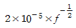
- 10-5
- 1.25×10-5
- 0.125×10-5×f
(정답률: 54%)
5. 중심주파수가 500Hz일 때, 1/3 옥타브밴드 분석기의 밴드폭(bw)은?
- 116Hz
- 232Hz
- 354Hz
- 708Hz
(정답률: 59%)
6. 확산음장의 특징으로 옳은 것은?
- 근음장(near field)에 속한다.
- 무향실은 확산음장이 얻어지는 공간이다.
- 위치에 따라 음압 변동이 매우 심하고 음원의 크기나 주파수, 방사면의 위상에 크게 영향을 받는다.
- 밀폐된 실내의 모든 표면에서 입사음이 거의 100% 반사된다면 실내 모든 위치에서 음에너지밀도가 일정하다.
(정답률: 50%)
7. 15℃에서 444Hz의 공명기본음 주파수를 가지는 양단 개구관의 35℃에서의 공명기본음 주파수는 약 얼마인가?
- 402Hz
- 414Hz
- 427Hz
- 460Hz
(정답률: 50%)
8. 지반을 전파하는 파에 관한 설명으로 가장 거리가 먼 것은?
- S파는 거리가 2배로 되면 6dB 정도 감소한다.
- P파는 거리가 2배로 되면 6dB 정도 감소한다.
- R파는 거리가 2배로 되면 3dB 정도 감소한다.
- 표면파의 전파속도는 횡파의 40~45%정도이다.
(정답률: 56%)
9. 측정소음의 표준편차가 3.5dB(A)이고, 소음공해레벨 (LNP, dB(NP))이 77일 때 등가소음도(Leq, dB(A))는?
- 63
- 68
- 73
- 78
(정답률: 9%)
10. 발음원이 이동할 때 그 진행방향 쪽에서는 원래 발음원의 음보다 고음으로, 진행 반대쪽에서는 저음으로 되는 현상을 일컫는 효과(법칙)은?
- 맥놀이 효과
- 도플러 효과
- 휴젠스 효과
- 히싱 효과
(정답률: 75%)
11. 2개의 작은 음원이 있다. 각각의 음향출력(W)의 비율이 1:25일 때 이 2개 음원의 음향파워레벨의 차이는?
- 11dB
- 14dB
- 18dB
- 21dB
(정답률: 57%)
12. 진동수 10Hz, 진동속도의 진폭이 5×10-3m/s인 정현진동의 진동가속도레벨(VAL)은? (단, 기준은 10-5m/s2이다.)
- 81dB
- 84dB
- 87dB
- 90dB
(정답률: 43%)
13. 음장의 종류 중 음원의 직접음과 벽에 의한 반사음이 중첩되는 구역을 무엇이라고 하는가?
- 근접음장
- 확산음장
- 근음장
- 잔향음장
(정답률: 32%)
14. 청력에 관한 내용으로 옳지 않은 것은?
- 음의 대소는 음파의 진폭(음압) 크기에 따른다.
- 음의 고저는 음파의 주파수에 따라 구분된다.
- 4분법에 의한 청력손실이 옥타브밴드 중심주파수가 500~2000Hz범위에서 10dB이상이면 난청이라 한다.
- 청력손실이란 청력이 정상인 사람의 최소 가청치와 피검사의 최소 가청치와의 비를 dB로 나타낸 것이다.
(정답률: 71%)
15. 1자유도 진동계의 고유진동수 fn을 나타낸 식으로 옳지 않은 것은? (단, ωn: 고유각진동수, m: 질량, k: 스프링정수, W: 중량, g: 중력가속도이다.)
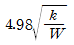
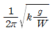
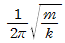
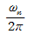
(정답률: 60%)
16. EPNL은 어떤 종류의 소음을 평가하기 위한 지표인가?
- 자동차 소음
- 공장 소음
- 철도 소음
- 항공기 소음
(정답률: 63%)
17. 외부에서 가해지는 강제진동수 f와 계의 고유진동수 fn의 비(Ratio) 관계에서 전달력과 외력이 같은 경우는?
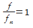
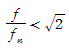
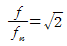
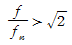
(정답률: 70%)
18. 인체의 청각기관에 관한 설명 중 거리가 먼 것은?
- 이소골은 초저주파소음의 전달과 진동에 따르는 인체의 평형을 담당한다.
- 외이는 귓바퀴, 귓구멍, 귀청 혹은 고막으로 구성된다.
- 중이는 3개의 청소골, 빈공간 및 유스타키오관으로 구성된다.
- 청소골은 망치뼈에 있어서의 높은 임피던스를 등자뼈에서는 낮은 임피던스로 바꿈으로써 외이의 높은 압력을 내이의 유효한 속도 성분으로 바꾸는 역할을 한다.
(정답률: 34%)
19. 지향계수가 2.5이면 지향지수는?
- 3.0dB
- 4.0dB
- 4.8dB
- 5.5dB
(정답률: 70%)
20. A공장 내 소음원에 대하여 소음도를 측정한 결과 각각 L1=88dB, L2=96dB, L3=100dB이었다. 이 소음원을 동시에 가동시킬 때의 합성 소음도는?
- 95dB
- 96dB
- 102dB
- 108dB
(정답률: 70%)
2과목: 소음방지기술
21. 가로, 세로, 높이가 각각 6m×5m×3m인 방의 흡음률이 바닥 0.1, 천장 0.2 벽 0.15이다. 이 방의 천장 및 벽을 흡음처리하여 그 흡음률을 각각 0.73, 0.62로 개선할 때의 실내소음 저감량은 약 몇 dB인가?
- 2.5
- 5
- 8
- 15
(정답률: 25%)
22. 동일 백색잡음을 주파수 분석할 경우 1/1옥타브밴드 중심주파수 1000Hz의 음압레벨은 1/3옥타브밴드 중심주파수 250Hz의 음압레벨보다 몇 dB 높겠는가?
- 4.8
- 6.2
- 8.4
- 10.9
(정답률: 22%)
23. 겨울철에 빌딩의 창문 또는 출입문의 틈새에서 강한 소음이 발생한다. 소음발생의 주요인은?
- 실내외의 밀도차에 의한 연돌효과 때문에
- 실내외의 온도차로 인하여 음속차가 발생하기 때문에
- 겨울철이 되면 주관적인 소음도가 높아지기 때문에
- 실외의 온도강하로 인하여 음속이 빨라지기 때문에
(정답률: 47%)
24. 다음 중 고체음에 대한 방지대책으로 거리가 먼 것은?
- 방사면의 축소
- 가진력 억제
- 밸브류 다단화
- 공명 방지
(정답률: 53%)
25. 감음계수에 관한 설명으로 옳은 것은?
- NRN라고도 하며 1/3옥타브 대역으로 측정한 중심주파수 250, 500, 1000, 2000Hz에서의 흡음률의 기하평균치이다.
- NRN라고도 하며 1/1옥타브 대역으로 측정한 중심주파수 250, 500, 2000Hz에서의 흡음률의 산술평균치이다.
- NRC라고도 하며 1/3옥타브 대역으로 측정한 중심주파수 250, 500, 1000, 2000Hz에서의 흡음률의 산술평균치이다.
- NRC라고도 하며 1/1옥타브 대역으로 측정한 중심주파수 250, 500, 1000, 2000Hz에서의 흡음률의 기하평균치이다.
(정답률: 56%)
26. 다음 중 방음벽에 의한 소음감쇠량의 대부분을 차지하는 것은?
- 방음벽의 높이에 의해 결정되는 회절감쇠
- 방음벽의 재질에 의해 결정되는 투과감쇠
- 방음벽의 두께에 의해 결정되는 반사감쇠
- 방음벽의 길이에 의해 결정되는 간섭감쇠
(정답률: 43%)
27. 차음과 차음재료의 선정 및 사용상 유의점에 대한 설명으로 가장 거리가 먼 것은?
- 차음은 음의 에너지를 반사시켜 차음벽 밖으로 음파가 새어 나가지 않게 하는 것이다.
- 차음에서 영향이 큰 것은 틈이므로 틈이나 찢어진 곳을 보수하고 이음매는 칠해서 메우도록 한다.
- 큰 차음효과(40dB이상)를 원하는 경우에는 내부에 보통 다공질 재료를 기운 이중벽을 시공한다.
- 차음재를 흡음재(다공질 재료)와 붙여서 사용할 경우 차음재는 음원과 가까운 안쪽에, 흡음재는 바깥쪽에 붙인다.
(정답률: 59%)
28. 평균흡음률 0.04인 실내의 평균음압레벨을 85dB에서 80dB로 낮추기 위해서는 평균흡음률을 약 얼마로 해야 하는가?
- 0.⑤
- 0.13
- 0.25
- 0.31
(정답률: 34%)
29. 입구 및 팽창부의 직경이 각각 50cm, 120cm인 팽창형 소음기에 의해 기대할 수 있는 대략적인 최대투과손실치는 약 몇 dB인가? (단, 대상주파수는 한계주파수보다 작다. (f＜fc범위이다.))
- 10
- 20
- 30
- 40
(정답률: 50%)
30. 가로, 세로, 높이가 3m, 5m, 2m인 방의 평균흡음률이 0.2일 때 실정수는 약 몇 m2인가?
- 5.5
- 10.5
- 15.5
- 20.5
(정답률: 59%)
31. 단일 벽의 일치효과에 관한 설명 중 옳지 않은 것은?
- 벽체에 사용한 재료의 밀도가 클수록 일치주파수는 저음역으로 이동한다.
- 입사파의 파장과 벽체를 전파하는 파장이 같을 때 일어난다.
- 벽체가 굴곡운동을 하기 때문에 일어난다.
- 일종의 공진상태가 되어 차음성능이 현저히 저하한다.
(정답률: 36%)
32. 방음겉씌우개(lagging)에 관한 설명으로 옳지 않은 것은?
- 관이나 판 등에 차음재를 부착한 후 흡음재를 씌운다.
- 파이프에서의 방사음에 대한 대책으로 효과적이다.
- 진동 발생부에 제진대책을 한 후 흡음재를 부착하면 더욱 효과적이다.
- 파이프의 굴곡부 혹은 밸브 부위에 시공한다.
(정답률: 16%)
33. 흡음재료의 선택 및 사용상 유의점으로 거리가 먼 것은?
- 막진동이나 판진동형의 것은 도장해도 별 차이가 없다.
- 다공질 재료의 표면에 종이를 입히는 것은 피해야 한다.
- 다공질 재료 표면은 얇은 직물로 피복하는 것이 바람직하다.
- 다공질 재료의 표면을 도장하면 고음역에서의 흡음률이 상승한다.
(정답률: 34%)
34. 공장의 벽체가 다음 표와 같이 구성되어 있다. 벽체의 통합 투과 손실은 약 몇 dB인가?
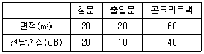
- 14.7
- 16.5
- 18.4
- 21.8
(정답률: 57%)
35. 동일한 재료(면밀도 200kg/m2)로 구성된 공기층의 두께가 16cm인 중공이중벽이 있다. 500Hz에서 단일벽체의 투과손실이 46dB일 때, 중공이중벽의 저음역에서의 공명주파수는 약 몇 Hz에서 발생되겠는가? (단, 음의 전파속도는 343m/s, 공기의 밀도는 1.2kg/m3이다.)
- 9
- 15
- 19
- 26
(정답률: 48%)
36. 공장소음을 방지하기 위해서 공장 건설시 고려해야 할 사항으로 가장 거리가 먼 것은?
- 주 소음원이 될 것으로 예상되는 것은 가급적 부지 경계선에서 멀리 배치한다.
- 개구부나 환기부는 기류의 흐름을 위해 주택가 측에 설치하는 것이 바람직하다.
- 공장의 건물은 공장의 부지경계선과 맞닿아 건축하는 것이 바람직하지 않다.
- 거리감쇠도 소음방지를 위해서 이용하는 편이 좋다.
(정답률: 64%)
37. 표면적이 20m2이고, PWLs 110dB인 소음원을 파장에 비해 큰 방음상자로 밀폐하였다. 방음상자의 표면적은 120m2이고, 방음상자 내의 평균흡음률이 0.6일 때 방음상자 내의 고주파 음압레벨은 약 몇 dB인가?
- 81
- 86
- 90
- 93
(정답률: 15%)
38. 파워레벨이 77dB인 기계가 4대, 75dB인 기계 1대가 동시에 가동할 때 파워레벨의 합은 몇 dB인가?
- 85.7
- 83.7
- 81.7
- 79.7
(정답률: 58%)
39. 단일벽의 차음특성 커브에서 질량제어영역의 기울기 특성으로 옳은 것은?
- 투과손실이 2dB/Octave 증가
- 투과손실이 3dB/Octave 증가
- 투과손실이 4dB/Octave 증가
- 투과손실이 6dB/Octave 증가
(정답률: 34%)
40. 팽창형 소음기의 특성이 아닌 것은?
- 급격한 관경확대로 유속을 낮추어서 소음을 감소시키는 소음기이다.
- 감음특성은 중·고음역대에서 유효하고, 고음역대의 감음량을 증가시키기 위해서 내부에 격막을 설치한다.
- 감음주파수는 팽창부의 길이에 따라 결정이 된다.
- 단면 불연속부의 음에너지반사에 의해 소음하는 구조이다.
(정답률: 43%)
3과목: 소음진동 공정시험 기준
41. 규제기준 중 발파진동 측정 시 디지털 진동자동분석계를 사용할 때의 샘플주기는 얼마로 놓는가? (단, 측정진동레벨 분석이다.)
- 10초 이하
- 5초 이하
- 1초 이하
- 0.1초 이하
(정답률: 32%)
42. 다음은 소음의 배출허용기준 측정 시 측정지점수 선정기준에 관한 설명이다. ( )안에 알맞은 것은?
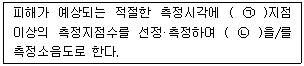
- ㉠ 1 ㉡ 그 값
- ㉠ 2 ㉡ 산술평균한 소음도
- ㉠ 2 ㉡ 그 중 가장 높은 소음도
- ㉠ 5 ㉡ 기하평균한 소음도
(정답률: 50%)
43. 규정에도 불구하고 규제기준 중 생활소음 측정 시 피해가 우려되는 곳의 부지경계선보다 3층 거실에서 소음도가 더 클 경우 측정점은 거실창문 밖의 몇 m 떨어진 지점으로 해야 하는 것이 가장 적합한가?
- 0.5m ~ 1.0m
- 3.0m ~ 3.5m
- 4m ~ 5m
- 5m ~ 10m
(정답률: 44%)
44. 다음은 철도진동관리기준 측정방법 중 분석절차에 관한 기준이다. ( ㉠ )안에 알맞은 것은?
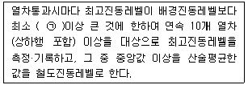
- 1dB
- 5dB
- 10dB
- 15dB
(정답률: 38%)
45. 소음계의 구성부분 중 진동레벨계의 진동픽업에 해당되는 것은?
- microphone
- amplifier
- calibration network calibrator
- weighting networks
(정답률: 47%)
46. 동일건물 내 사업장 소음을 측정하였다. 1지점에서의 측정치가 각각 70dB(A), 75dB(A), 2지점에서의 측정치가 각각 75dB(A), 79dB(A)로 측정되었을 때, 이 사업장의 측정소음도는?
- 72dB(A)
- 75dB(A)
- 77dB(A)
- 79dB(A)
(정답률: 36%)
47. 다음은 레벨레인지 변환기에 대한 설명이다. ( )안에 알맞은 것은?
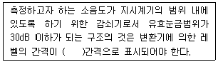
- 1dB
- 5dB
- 10dB
- 15dB
(정답률: 43%)
48. 환경기준 중 소음측정방법에 따라 소음을 측정할 때 밤 시간대(22:00~06:00)에는 낮 시간대에 측정한 측정지점에서 몇 시간 간격으로 몇 회 이상 측정하여 산술평균한 값을 측정소음도로 하는가?
- 4시간 이상 간격, 4회 이상
- 4시간 이상 간격, 2회 이상
- 2시간 이상 간격, 4회 이상
- 2시간 이상 간격, 2회 이상
(정답률: 50%)
49. 소음진동공정시험기준에서 정한 각 소음측정을 위한 소음 측정지점수 선정기준으로 옳지 않은 것은?
- 배출허용기준 – 1지점 이상
- 생활소음 – 2지점 이상
- 발파소음 – 1지점 이상
- 도로교통소음 – 2지점 이상
(정답률: 60%)
50. 다음은 L10진동레벨 계산기준에 관한 설명이다. ( )안에 가장 적합한 것은?
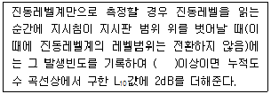
- 3회
- 6회
- 9회
- 12회
(정답률: 57%)
51. 규제기준 중 발파진동 측정방법에 관한 설명으로 옳지 않은 것은?
- 진동레벨기록기를 사용하여 측정할 때에는 기록지상의 지시치의 최고치를 측정진동레벨로 한다.
- 진동레벨계만으로 측정할 경우에는 최고진동레벨이 고정(hold)되어서는 안된다.
- 작업일지 및 발파계획서 또는 폭약사용신고서를 참조하여 소음·진동관리법규에서 구분하는 각 시간대 중에서 최대발파진동이 예상되는 시각의 진동을 포함한 모든 발파진동을 1지점 이상에서 측정한다.
- 진동레벨계의 출력단자와 진동레벨기록기의 입력단자를 연결한 후 전원과 기기의 동작을 점검하고 매회 교정을 실시하여야 한다.
(정답률: 50%)
52. 다음 중 소음과 관련한 용어의 정의로 옳지 않은 것은?
- 소음도: 소음계의 청감보정회로를 통하여 측정한 지시치를 말한다.
- 배경소음도: 측정소음도의 측정위치에서 대상소음이 없을 때 이 시험기준에서 정한 측정방법으로 측정한 소음도 및 등가소음도 등을 말한다.
- 반사음: 한 매질중의 음파가 다른 매질의 경계면에 입사한 후 진행방향을 변경하여 본래의 매질 중으로 되돌아오는 음을 말한다.
- 지발발파: 발파기를 3회 사용하여, 수 초 내에 시간차를 두고 발파하는 것을 말한다.
(정답률: 57%)
53. 환경기준 중 소음측정방법에 관한 사항으로 옳지 않은 것은?
- 도로변지역의 범위는 도로단으로부터 차선수×15m로 한다.
- 사용 소음계는 KS C IEC 61672-1에 정한 클래스 2의 소음계 또는 동등 이상의 성능을 가진 것이어야 한다.
- 옥외측정을 원칙으로 한다.
- 일반지역의 경우에는 가능한 한 측정점 반경 3.5m 이내에 장애물(담, 건물, 기타 반사성 구조물 등)이 없는 지점의 지면 위 1.2~1.5m를 측정점으로 한다.
(정답률: 48%)
54. 1일 동안의 평균 최고소음도가 101dB(A)이고, 1일간 항공기의 등가통과횟수가 5⑤회 일 때 1일 단위의 WECPNL(dB)은?
- 약 94
- 약 98
- 약 101
- 약 1⑤
(정답률: 65%)
55. 다음 진동레벨계의 구성 중 4번에 해당하는 장치는?
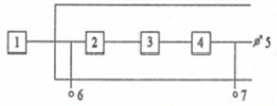
- 증폭기
- 교정장치
- 레벨레인지 변환기
- 감각보정회로
(정답률: 31%)
56. 방직공장의 측정소음도가 72dB(A)이고 배경소음이 68dB(A)라면 대상소음도는 약 몇 dB(A)가 되겠는가?
- 76dB(A)
- 72dB(A)
- 70dB(A)
- 68dB(A)
(정답률: 58%)
57. 소음계의 성능기준에 대한 설명으로 옳은 것은?
- 측정가능 주파수 범위는 1~16Hz 이상이어야 한다.
- 측정가능 소음도 범위는 35~130dB 이상이어야 한다.
- 레벨레인지 변환기가 있는 기기에 있어서 레벨레인지 변환기의 전환오차가 1dB이내이어야 한다.
- 지시계기의 눈금오차는 1dB 내이어야 한다.
(정답률: 50%)
58. 진동레벨기록기를 사용하여 측정할 경우 기록지상의 지시치의 변동폭이 5dB 이내일 때 측정자료 분석기준이 다른 것은?
- 도로교통진동 관리기준
- 철도진동 관리기준
- 생활진동 규제기준
- 진동의 배출허용기준
(정답률: 43%)
59. 공장의 부지경계선에서 측정한 진동레벨이 각지점에서 각각 62dB(V), 65dB(V), 68dB(V), 71dB(V), 64dB(V), 67dB(V)이다. 이 공장의 측정진동레벨은?
- 66dB(V)
- 68dB(V)
- 69dB(V)
- 71dB(V)
(정답률: 42%)
60. 진동레벨계의 사용기준 중 진동픽업의 횡감도는 규정주파수에서 수감축 감도에 대하여 최소 몇 dB 이상의 차이가 있어야 하는가? (단, 연직특성이다.)
- 5dB
- 10dB
- 15dB
- 20dB
(정답률: 57%)
4과목: 진동방지기술
61. 다음 방진재료에 대한 설명으로 가장 거리가 먼 것은?
- 방진고무의 역학적 성질은 천연고무가 가장 우수하지만 내유성을 필요로 할 떄에는 천연고무가 바람직하지 않다.
- 금속스프링 사용 시 서징이 발생하기 쉬우므로 주의해야 한다.
- 금속스프링은 저주파 차진에 좋다.
- 급속스프링의 동적배율은 방진고무보다 높다.
(정답률: 58%)
62. 회전속도가 1200rpm인 원심팬이 있다. 방진스프링으로 탄성지지를 시켰더니 1cm의 정적처짐이 발생하였다. 이 때 진동전달률은 약 몇 %인가? (단, 스프링의 감쇠는 무시한다.)
- 4.2
- 6.6
- 10.4
- 15.3
(정답률: 54%)
63. 진동방지대책을 세우고자 한다. 다음 중 일반적으로 가장 먼저 해야 할 것은?
- 적정 방지대책 선정
- 수진점의 진동규제기준 확인
- 발생원의 위치와 발생기계 확인
- 진동이 문제가 되는 수진점의 위치 확인
(정답률: 43%)
64. 다음 중 내부 감쇠계수가 가장 큰 지반의 종류는?
- 점토
- 모래
- 자갈
- 암석
(정답률: 50%)
65. 무게 W인 물체가 스프링 상수 k인 스프링에 의해 지지되어 있을 때 운동 방정식은 다음과 같다. 여기서 고유진동수[Hz]를 나타내는 식으로 옳은 것은?
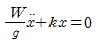
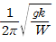
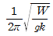
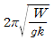
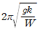
(정답률: 43%)
66. 정현진동의 가속도 최대진폭이 3×10-2m/s2일 때, 진동가속도 레벨(VAL)은 약 몇 dB인가? (단, 기준은 10-5m/s2이다.)
- 57
- 61
- 67
- 72
(정답률: 40%)
67. 어떤 질점의 운동변위가 아래와 같을 때 최대속도를 구하면 약 몇 cm/s인가?
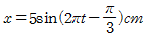
- 15.7
- 31.4
- 47.1
- 197.4
(정답률: 48%)
68. 진동발생이 크지 않은 공장기계의 대표적인 지반진동 차단 구조물은 개방식 방진구이다. 이러한 방지구의 설계 시 다음 중 가장 중요한 인자는?
- 트렌치 폭
- 트렌치 깊이
- 트렌치 형상
- 트렌치 위치
(정답률: 54%)
69. 쇠로된 금속관 사이의 접속부에 고무를 넣어 진동 절연하고자 한다. 파동에너지 반사율이 95%가 되면, 전달되는 진동의 감쇠량은 대략 몇 dB가 되는가?
- 10
- 13
- 16
- 20
(정답률: 48%)
70. 현장에서 계의 고유 진동수를 간단히 알 수 있는 방법은 질량 m인 물체를 탄성지지체에 올려 놓고 처짐량 δst를 측정하는 것이다. 고유진동수(fn)를 구하는 식으로 옳은 것은?
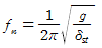
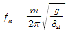
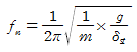
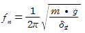
(정답률: 59%)
71. 금속 스프링을 이용하여 방진지지 할 때, 로킹(Rocking)이 일어나지 않도록 하기 위한 조치로 가장 거리가 먼 것은?
- 계의 중심을 낮게 한다.
- 기계무게의 1~2배의 질량을 부가한다.
- 스프링의 정적 수축량을 일정하게 한다.
- 로킹이 일어나는 방향으로 하중을 분포시킨다.
(정답률: 31%)
72. 금속관의 플랜지부에 고무를 부착하여 제진하려고 한다. 금속관의 특성임피던스는 40×106kg/m2·s, 고무의 특성 임피던스 4×106kg/m2·s이라고 할 때, 진동감쇠량은 약 몇 dB인가?(오류 신고가 접수된 문제입니다. 반드시 정답과 해설을 확인하시기 바랍니다.)
- 21
- 24
- 27
- 30
(정답률: 20%)
73. 가진력을 기계회전부의 질량불균형에 의한 가진력, 기계의 왕복운동에 의한 가진력, 충격에 의한 가진력으로 분류할 때, 다음 중 주로 충격 가진력에 의해 진동이 발생하는 것은?
- 펌프
- 송풍기
- 유도전동기
- 단조기
(정답률: 50%)
74. 외부에서 가해지는 강제진동수를 f라 하고 계의 고유진동수를 fn이라 할 때, 가진되는 외력보다 전달력이 항상 자게 되는 영역은?
- f/fn=1
- f/fn＜√2
- f/fn=√2
- f/fn＞√2
(정답률: 37%)
75. 감쇠 자유진동을 하는 진동계에서 진폭이 3사이클 후 50% 감소되었을 때 이 계의 대수감쇠율은?
- 0.13
- 0.17
- 0.23
- 0.32
(정답률: 47%)
76. 공기스프링에 관한 설명으로 가장 적합한 것은?
- 지지하중의 크기가 변하는 경우에도 조정밸브에 의해서 기계 높이를 일정레벨로 유지할 수 있다.
- 하중 변화에 따라 고유진동수를 일정하게 유지할 수 있고, 별도의 부대시설은 필요 없다.
- 사용진폭이 큰 것이 많고, 부하능력은 좁은 편이다.
- 공기누출의 위험이 없으며, 별도의 댐퍼시설이 필요 없어 효과적이다.
(정답률: 57%)
77. 지반진동 차단 구조물에 관한 설명으로 가장 거리가 먼 것은?
- 수동차단은 진동원에서 비교적 멀리 떨어져 문제가 되는 특정 수진 구조물 가까이 설치되는 경우를 말한다.
- 개방식 방진구는 굴착벽의 함몰로 시공깊이에 제약이 따른다.
- 공기층을 이용하는 개방식 방진구가 충진식 방진벽에 비해 파 에너지 차단(반사)특성이 크게 떨어진다.
- 가장 대표적인 지반진동 차단 구조물은 개방식 방진구이다.
(정답률: 48%)
78. 감쇠비 ζ가 주어졌을 때 대수감쇠율을 옳게 표시한 것은?
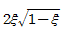
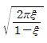
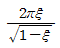
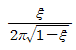
(정답률: 50%)
79. 스프링 탄성계수 K=1kN/m, 질량 m=8kg인 계의 비감쇠 자유진동 시 주기는 약 몇 s인가?
- 0.56
- 1.12
- 2.24
- 4.48
(정답률: 62%)
80. 다음 ( )안에 들어갈 진동의 종류로 가장 적합한 것은?
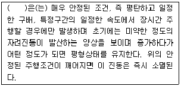
- 저크(jerk)
- 디스크 셰이킹(Disk shaking)
- 프론트엔드 진동(front end vibration)
- 아이들 진동(idle vibration)
(정답률: 25%)
5과목: 소음진동 관계 법규
81. 소음·진동관리법령상 공사장 소음규제기준 중 주간의 경우 특정공사 사전신고 대상 기계·장비를 사용하는 작업시간이 1일 3시간 이하일 때 공사장 소음규제기준의 보정값은?
- +10dB
- +6dB
- +5dB
- +3dB
(정답률: 47%)
82. 소음·진동관리법령상 인증을 생략할 수 있는 자동차에 해당되지 않는 것은?
- 제설용·방송용 등 특수한 용도로 사용되는 자동차로서 환경부장관이 정하여 고시하는 자동차
- 외국에서 국내의 공공기관에 무상으로 기증하여 반입하는 자동차
- 여행자 등이 다시 반출할 것을 조건으로 일시 반입하는 자동차
- 항공기 지상조업용으로 반입하는 자동차
(정답률: 19%)
83. 다음은 소음·진동관리법령상 과징금의 부과기준이다. ( )안에 알맞은 것은?
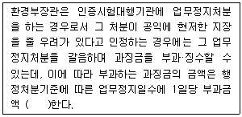
- 10만원을 곱하여 산정
- 20만원을 곱하여 산정
- 10만원을 더하여 사정
- 20만원을 더하여 산정
(정답률: 19%)
84. 소음·진동관리법령상 소음방지시설에 해당하지 않는 것은?
- 방음벽시설
- 방음덮개시설
- 소음기
- 탄성지지시설
(정답률: 44%)
85. 환경정책기본법령상 국가 및 지방자치단체가 환경기준이 적절히 유지되도록 환경에 관한 법령의 제정과 행정계획의 수립 또는 사업을 집행할 경우에 고려하여야 할 사항과 가장 거리가 먼 것은?
- 재원 조달방법의 홍보
- 새로운 과학기술의 사용으로 인한 환경훼손의 예방
- 환경오염지역의 원상회복
- 환경 악화의 예방 및 그 요인의 제거
(정답률: 39%)
86. 소음·진동관리법령상 공사장 방음시설 설치기준으로 옳지 않은 것은?
- 삽입손실 측정 시 동일한 음량과 음원을 사용하는 경우에는 기준위치(reference position)의 측정은 생략할 수 있다.
- 삽입손실 측정을 위한 측정지점(음원 위치, 수음자 위치)은 음원으로부터 5m 이상 떨어진 노면 위 1.2m 지점으로 한다.
- 방음벽시설 전후의 소음도 차이(삽입손실)는 최소 5dB이상 되어야 한다.
- 방음벽시설의 높이는 3m 이상 되어야 한다.
(정답률: 32%)
87. 소음·진동관리법령상에서 사용하는 용어의 뜻으로 옳지 않은 것은?
- “소음·진동방지시설”이란 소음·진동배출시설로부터 배출되는 소음·진동을 없애거나 줄이는 시설로서 환경부령으로 정하는 것을 말한다.
- “방진시설”이란 소음·진동배출시설이 아닌 물체로부터 발생하는 진동을 없애거나 줄이는 시설로서 환경부령으로 정하는 것을 말한다.
- “교통기관”이란 기차·자동차·전차·도로 및 철도 등을 말한다. 다만, 항공기와 선박은 제외한다.
- “휴대용음향기기”란 휴대가 쉬운 소형 음향재생기기(음악재생기능이 있는 이동전화는 제외)로서 산업통상자원부령으로 정하는 것을 말한다.
(정답률: 50%)
88. 소음·진동관리법령상 소음발생건설기계 소음도 검사기관의 지정기준 중 시설 및 장비기준으로 옳지 않은 것은?
- 검사장: 면적 400m2 이상(20m×20m 이상)
- 장비: 다기능 표준음발생기(31.5Hz 이상 16kttz 이하) 1대 이상
- 장비: 삼각대 등 마이크로폰을 높이 1.5m 이상의 공중에 고정할 수 있는 장비 4대 이상, 높이 10m 이상의 공중에 고정할 수 있는 장비 2대 이상
- 장비: 녹음 및 기록장치(6채널 이상) 1대 이상
(정답률: 39%)
89. 소음·진동관리법령상 항공기 소음의 한도기준에 관한 설명으로 옳은 것은?
- 공항 인근지역은 항공기소음영향도(WECPNL) 95로 하고, 그 밖의 지역은 80으로 한다.
- 공항 인근지역은 항공기소음영향도(WECPNL) 95로 하고, 그 밖의 지역은 75로 한다.
- 공항 인근지역은 항공기소음영향도(WECPNL) 90로 하고, 그 밖의 지역은 80으로 한다.
- 공항 인근지역은 항공기소음영향도(WECPNL) 90로 하고, 그 밖의 지역은 75로 한다.
(정답률: 40%)
90. 소음·진동관리법령상 진동배출시설에 해당하는 것은? (단, 동력을 사용하는 시설 및 기계·기구로 한정한다.)
- 20kW의 프레스(유압식 제외)
- 20kW의 성형기
- 20kW의 연탄제조용 윤전기
- 2대의 시멘트벽돌 및 블록의 제조기계
(정답률: 16%)
91. 소음·진동관리법령상 행정처분기준에 관한 사항으로 옳지 않은 것은?
- 위반행위가 둘 이상일 때에는 각 위반행위에 따라 각각 처분한다.
- 위반횟수의 산정은 위반행위를 한 날을 기준으로 한다.
- 처분권자는 위반행위의 동기·내용·횟수 및 위반의 정도 등을 고려하여 그 처분(허가취소, 등록취소, 지정취소 또는 폐쇄명령인 경우는 제외한다)을 감경할 수 있는데, 이 경우 그 처분이 조업정지, 업무정지 또는 영업정지인 경우에는 그 처분기준의 2분의 1의 범위에서 감경할 수 있다.
- 법에 따른 방지시설을 설치하지 아니하고 배출시설을 가동한 경우 1차 행정처분기준은 사업장 “폐쇄”이다.
(정답률: 54%)
92. 소음·진동관리법령상 자동차 사용정지표지에 관한 설명으로 옳은 것은?
- 표지규격은 210mm×297mm로 한다.(인쇄용지(특급) 180g/m2)
- 바탕색은 흰색으로, 문자는 검은색으로 한다.
- 이 표지는 자동차의 전면유리창 왼쪽 하단에 붙인다.
- 사용정지기간 중에 자동차를 사용하는 경우에는 소음진동관리법에 따라 6개월 이하의 징역 또는 500만원 이하의 벌금에 처한다.
(정답률: 53%)
93. 소음·진동관리법령상 녹지지역의 주간시간대의 철도소음의 관리(한도)기준은?
- 60 Leq dB(A)
- 65 Leq dB(A)
- 70 Leq dB(A)
- 75 Leq dB(A)
(정답률: 20%)
94. 소음·진동관리법령상 소음발생건설기계의 종류에 해당하지 않는 것은?
- 굴착기(정격출력 19kW 이상 500kW 미만의 것으로 한정한다.)
- 발전기(정격출력 500kW 이상의 실내용으로 한정한다.)
- 공기압축기(공기토출량이 분당 2.83세제곱미터 이상의 이동식인 것으로 한정한다.)
- 항타 및 항발기
(정답률: 29%)
95. 다음은 소음·진동관리법령상 상시 측정자료의 제출에 관한 사항이다. ( )안에 가장 적합한 것은?
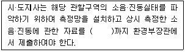
- 매월 말일
- 매분기 다음 달 말일
- 매반기 다음 달 말일
- 매년 말일
(정답률: 50%)
96. 다음은 소음·진동관리법령상 자동차제작자의 권리·의무승계신고에 관한 사항이다. ( )안에 알맞은 것은?
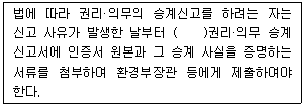
- 7일 이내에
- 10일 이내에
- 15일 이내에
- 30일 이내에
(정답률: 32%)
97. 소음·진동관리법령상 운행차 정기검사대행자의 기술능력기준에 해당하지 않는 자격은?
- 건설안전산업기사
- 건설기계정비산업기사
- 자동차정비산업기사
- 대기환경산업기사
(정답률: 56%)
98. 소음·진동관리법령상 환경기술인을 임명하지 아니한 자에 대한 과태료 부과기준으로 옳은 것은?
- 200만원 이하의 과태료
- 300만원 이하의 과태료
- 6개월 이하의 징역 또는 500만원 이하의 과태료
- 1년 이하의 징역 또는 500만원 이하의 과태료
(정답률: 47%)
99. 소음·진동관리법령상 제작차의 소음배출특성을 참작하기 위한 소음 종류와 가장 거리가 먼 것은?
- 경적소음
- 가속주행소음
- 주행소음
- 배기소음
(정답률: 40%)
100. 소음·진동관리법령상 시·도지사 등은 운행차의 소음이 운행차 소음허용기준을 초과한 경우 그 자동차 소유자에 대하여 개선을 명할 수 있는데, 이 때 개선에 필요한 기간은 개선명령일부터 며칠로 하는가?
- 5일
- 7일
- 15일
- 30일
(정답률: 39%)